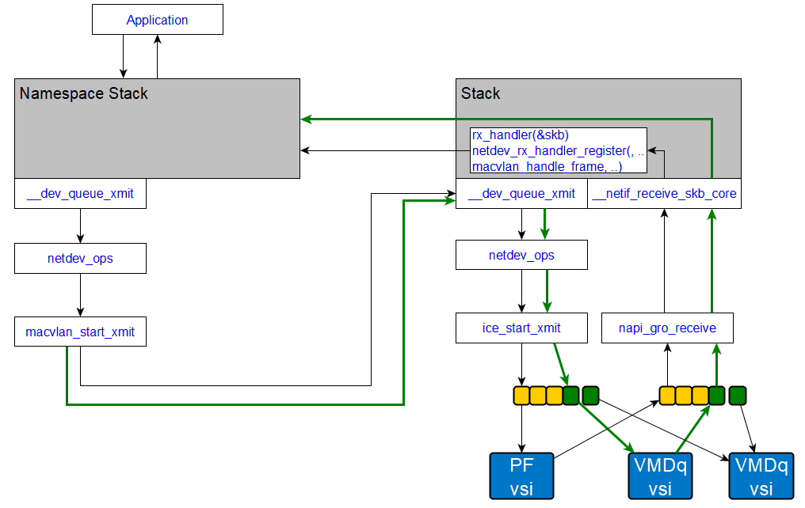

Linux Macvlan and NIC offload
1. Intro
1.1 About
Macvlan is kind of simplified bridge. Refer to https://developers.redhat.com/blog/2018/10/22/introduction-to-linux-interfaces-for-virtual-networking#macvlan for more details
1.2 Why macvlan
Some applications, especially legacy applications or applications which monitor network traffic, expect to be directly connected to the physical network. In this type of situation, you can use the macvlan network driver to assign a MAC address to each container’s virtual network interface, making it appear to be a physical network interface directly connected to the physical network. from https://docs.docker.com/network/macvlan/
There is some limitation for host container communication directly due to security concern while macvlan designing: https://access.redhat.com/documentation/en-us/red_hat_enterprise_linux/6/html/virtualization_host_configuration_and_guest_installation_guide/app_macvtap
Resolution:
Create another macvlan and set host route table to make traffic to go through this macvlan interface.
https://rehtt.com/index.php/archives/236/
2. Deployment
For example, we can create 2 iface from eth0 and then assign them to different namespaces
# ip link add macvlan1 link eth0 type macvlan mode bridge
# ip link add macvlan2 link eth0 type macvlan mode bridge
# ip netns add net1
# ip netns add net2
# ip link set macvlan1 netns net1
# ip link set macvlan2 netns net2
3. Internals
3.1 key data structurers
When netlink command for creating macvlan is received in kernel, a new netdev will be allocated and registered into kernel net subsystem:
static struct rtnl_link_ops macvlan_link_ops = {
▸ .kind▸ ▸ = "macvlan",
▸ .setup▸ ▸ = macvlan_setup,
▸ .newlink▸ = macvlan_newlink,
▸ .dellink▸ = macvlan_dellink,
▸ .get_link_net▸ = macvlan_get_link_net,
▸ .priv_size = sizeof(struct macvlan_dev),
};
void macvlan_common_setup(struct net_device *dev)
{
▸ ether_setup(dev);
▸ dev->min_mtu▸ ▸ = 0;
▸ dev->max_mtu▸ ▸ = ETH_MAX_MTU;
▸ dev->priv_flags▸ &= ~IFF_TX_SKB_SHARING;
▸ netif_keep_dst(dev);
▸ dev->priv_flags▸ |= IFF_UNICAST_FLT;
▸ dev->netdev_ops▸▸ = &macvlan_netdev_ops;
▸ dev->needs_free_netdev▸ = true;
▸ dev->header_ops▸▸ = &macvlan_hard_header_ops;
▸ dev->ethtool_ops▸ = &macvlan_ethtool_ops;
}
EXPORT_SYMBOL_GPL(macvlan_common_setup);
static void macvlan_setup(struct net_device *dev)
{
▸ macvlan_common_setup(dev);
▸ dev->priv_flags |= IFF_NO_QUEUE;
}
int macvlan_common_newlink(struct net *src_net, struct net_device *dev,
▸ ▸ ▸ struct nlattr *tb[], struct nlattr *data[],
▸ ▸ ▸ struct netlink_ext_ack *extack)
{
...
▸ err = register_netdevice(dev);
▸ if (err < 0)
▸ ▸ goto destroy_macvlan_port;
▸ dev->priv_flags |= IFF_MACVLAN;
▸ err = netdev_upper_dev_link(lowerdev, dev, extack);
▸ if (err)
▸ ▸ goto unregister_netdev;
...
}
static int macvlan_newlink(struct net *src_net, struct net_device *dev,
▸ ▸ ▸ struct nlattr *tb[], struct nlattr *data[],
▸ ▸ ▸ struct netlink_ext_ack *extack)
{
▸ return macvlan_common_newlink(src_net, dev, tb, data, extack);
}
3.2 tx path
In linux, the parent netdev is called lowerdev.
When there is packets sent from macvlan netdev, xmit func will be called and route destination is determined by strategy :
static netdev_tx_t macvlan_start_xmit(struct sk_buff *skb,
▸ ▸ ▸ ▸ struct net_device *dev)
{
▸ struct macvlan_dev *vlan = netdev_priv(dev);
▸ unsigned int len = skb->len;
▸ int ret;
▸ if (unlikely(netpoll_tx_running(dev)))
▸ ▸ return macvlan_netpoll_send_skb(vlan, skb);
▸ ret = macvlan_queue_xmit(skb, dev);
▸ if (likely(ret == NET_XMIT_SUCCESS || ret == NET_XMIT_CN)) {
▸ ▸ struct vlan_pcpu_stats *pcpu_stats;
▸ ▸ pcpu_stats = this_cpu_ptr(vlan->pcpu_stats);
▸ ▸ u64_stats_update_begin(&pcpu_stats->syncp);
▸ ▸ pcpu_stats->tx_packets++;
▸ ▸ pcpu_stats->tx_bytes += len;
▸ ▸ u64_stats_update_end(&pcpu_stats->syncp);
▸ } else {
▸ ▸ this_cpu_inc(vlan->pcpu_stats->tx_dropped);
▸ }
▸ return ret;
}
static int macvlan_queue_xmit(struct sk_buff *skb, struct net_device *dev)
{
▸ const struct macvlan_dev *vlan = netdev_priv(dev);
▸ const struct macvlan_port *port = vlan->port;
▸ const struct macvlan_dev *dest;
▸ if (vlan->mode == MACVLAN_MODE_BRIDGE) {
▸ ▸ const struct ethhdr *eth = skb_eth_hdr(skb);
▸ ▸ /* send to other bridge ports directly */
▸ ▸ if (is_multicast_ether_addr(eth->h_dest)) {
▸ ▸ ▸ skb_reset_mac_header(skb);
▸ ▸ ▸ macvlan_broadcast(skb, port, dev, MACVLAN_MODE_BRIDGE);
▸ ▸ ▸ goto xmit_world;
▸ ▸ }
▸ ▸ dest = macvlan_hash_lookup(port, eth->h_dest);
▸ ▸ if (dest && dest->mode == MACVLAN_MODE_BRIDGE) {
▸ ▸ ▸ /* send to lowerdev first for its network taps */
▸ ▸ ▸ dev_forward_skb(vlan->lowerdev, skb);
▸ ▸ ▸ return NET_XMIT_SUCCESS;
▸ ▸ }
▸ }
xmit_world:
▸ skb->dev = vlan->lowerdev;
▸ return dev_queue_xmit_accel(skb,
▸ ▸ ▸ ▸ netdev_get_sb_channel(dev) ? dev : NULL);
}
3.3 rx path
When there is packets sent from outside world, it will firstly go into lowerdev and then get forwarded:
This is done by changing lowerdev rx handler by calling netdev_rx_handler_register() :
static int macvlan_port_create(struct net_device *dev)
{
...
▸ err = netdev_rx_handler_register(dev, macvlan_handle_frame, port);
...
}
/* called under rcu_read_lock() from netif_receive_skb */
static rx_handler_result_t macvlan_handle_frame(struct sk_buff **pskb)
{
...
▸ port = macvlan_port_get_rcu(skb->dev);
▸ if (is_multicast_ether_addr(eth->h_dest)) {
...
}
▸ macvlan_forward_source(skb, port, eth->h_source);
▸ if (macvlan_passthru(port))
▸ ▸ vlan = list_first_or_null_rcu(&port->vlans,
▸ ▸ ▸ ▸ ▸ struct macvlan_dev, list);
▸ else
▸ ▸ vlan = macvlan_hash_lookup(port, eth->h_dest);
▸ if (!vlan || vlan->mode == MACVLAN_MODE_SOURCE)
▸ ▸ return RX_HANDLER_PASS;
...
▸ ret = NET_RX_SUCCESS;
...
}
4. Macvlan NIC offload
4.1 Linux offload support
Linux support offload macvlan through NETIF_F_HW_L2FW_DOFFLOAD netdev feature.
While netdev open is being called, NETIF_F_HW_L2FW_DOFFLOAD will be checked and corresponding callback will be executed to offload L2 forwarding for unicast packets
static int macvlan_open(struct net_device *dev)
{
...
▸ /* Attempt to populate accel_priv which is used to offload the L2
▸ * forwarding requests for unicast packets.
▸ */
▸ if (lowerdev->features & NETIF_F_HW_L2FW_DOFFLOAD)
▸ ▸ vlan->accel_priv =
▸ ▸ lowerdev->netdev_ops->ndo_dfwd_add_station(lowerdev, dev);
...
}
4.2 NIC support for l2 forward offload
NIC offload macvlan L2 forwarding by adding unique vsi per macvlan netdev. So each macvlan netdev has dedicated Queue, MSIX interrupt, etc.
As a result, all L2 forward is done by embedded switch(VEB): check i40e_fwd_add() in kernel for details
NIC_fwd_add_macvlan(struct net_device *netdev, struct net_device *vdev)
{
...
...
▸ ret = netdev_set_sb_channel(vdev, avail_id + 1);
...
▸ /* configure sbdev with the number of queues and offset within PF
▸ * queues range
▸ */
▸ ret = netdev_bind_sb_channel_queue(netdev, vdev, 0, xxx->num_txq,
▸ ▸ ▸ ▸ ▸ offset);
...
...
}
4.4 Example
Fortville/Columbiaville support macvlan offload by ethtool l2-fw-offload capability:
➜ ethtool -k enp137s0f1 | grep l2
l2-fwd-offload: off
By enabling this offload, we need to turn this capability:
➜ sudo ethtool -K enp137s0f0 l2-fwd-offload on
Then using below scripts to test macvlan behavior:
enp137s0f0 and enp137s0f1 are back-to-back connected to each other on the physical port
sudo ifconfig enp137s0f0 0.0.0.0 up
sudo ifconfig enp137s0f1 192.168.0.10 up
sudo ip -all netns delete
sudo ip link delete macvlan0
sudo ip link delete macvlan1
sudo ip link add link enp137s0f0 name macvlan0 type macvlan mode {MODE} #private, vepa, bridge
sudo ip link add link enp137s0f0 name macvlan1 type macvlan mode {MODE} #private, vepa, bridge
sudo ip netns add net0
sudo ip netns add net1
sudo ip link set macvlan0 netns net0
sudo ip link set macvlan1 netns net1
sudo ip netns exec net0 ifconfig macvlan0 192.168.0.100 up
sudo ip netns exec net1 ifconfig macvlan1 192.168.0.101 up
sudo ip netns exec net0 ping 192.168.0.10 -c 5
sudo ip netns exec net0 ping 192.168.0.101
If using private/vepa mode, you may get below log:
➜./macvlan.sh
Cannot find device "macvlan0"
Cannot find device "macvlan1"
PING 192.168.0.10 (192.168.0.10) 56(84) bytes of data.
64 bytes from 192.168.0.10: icmp_seq=1 ttl=64 time=0.226 ms
64 bytes from 192.168.0.10: icmp_seq=2 ttl=64 time=0.197 ms
64 bytes from 192.168.0.10: icmp_seq=3 ttl=64 time=0.205 ms
64 bytes from 192.168.0.10: icmp_seq=4 ttl=64 time=0.199 ms
64 bytes from 192.168.0.10: icmp_seq=5 ttl=64 time=0.207 ms
--- 192.168.0.10 ping statistics ---
5 packets transmitted, 5 received, 0% packet loss, time 4078ms
rtt min/avg/max/mdev = 0.197/0.206/0.226/0.020 ms
PING 192.168.0.10 (192.168.0.10) 56(84) bytes of data.
64 bytes from 192.168.0.10: icmp_seq=1 ttl=64 time=0.197 ms
64 bytes from 192.168.0.10: icmp_seq=2 ttl=64 time=0.227 ms
64 bytes from 192.168.0.10: icmp_seq=3 ttl=64 time=0.203 ms
64 bytes from 192.168.0.10: icmp_seq=4 ttl=64 time=0.202 ms
64 bytes from 192.168.0.10: icmp_seq=5 ttl=64 time=0.200 ms
--- 192.168.0.10 ping statistics ---
5 packets transmitted, 5 received, 0% packet loss, time 4079ms
rtt min/avg/max/mdev = 0.197/0.205/0.227/0.021 ms
PING 192.168.0.101 (192.168.0.101) 56(84) bytes of data.
^C
--- 192.168.0.101 ping statistics ---
5 packets transmitted, 0 received, 100% packet loss, time 4079ms
This means macvlan0/macvlan1 can communicate to outsider world(enp137s0f1), but they can't communicate with each other.


Notes: since we don't have vepa switch outside, so private and vepa results are the same.
If using bridge mode, you may get:
➜ ./macvlan.sh
Cannot find device "macvlan0"
Cannot find device "macvlan1"
PING 192.168.0.10 (192.168.0.10) 56(84) bytes of data.
64 bytes from 192.168.0.10: icmp_seq=1 ttl=64 time=0.230 ms
64 bytes from 192.168.0.10: icmp_seq=2 ttl=64 time=0.217 ms
64 bytes from 192.168.0.10: icmp_seq=3 ttl=64 time=0.223 ms
64 bytes from 192.168.0.10: icmp_seq=4 ttl=64 time=0.203 ms
64 bytes from 192.168.0.10: icmp_seq=5 ttl=64 time=0.207 ms
--- 192.168.0.10 ping statistics ---
5 packets transmitted, 5 received, 0% packet loss, time 4086ms
rtt min/avg/max/mdev = 0.203/0.216/0.230/0.010 ms
PING 192.168.0.10 (192.168.0.10) 56(84) bytes of data.
64 bytes from 192.168.0.10: icmp_seq=1 ttl=64 time=0.203 ms
64 bytes from 192.168.0.10: icmp_seq=2 ttl=64 time=0.234 ms
64 bytes from 192.168.0.10: icmp_seq=3 ttl=64 time=0.223 ms
64 bytes from 192.168.0.10: icmp_seq=4 ttl=64 time=0.210 ms
64 bytes from 192.168.0.10: icmp_seq=5 ttl=64 time=0.215 ms
--- 192.168.0.10 ping statistics ---
5 packets transmitted, 5 received, 0% packet loss, time 4079ms
rtt min/avg/max/mdev = 0.203/0.217/0.234/0.010 ms
PING 192.168.0.101 (192.168.0.101) 56(84) bytes of data.
64 bytes from 192.168.0.101: icmp_seq=1 ttl=64 time=0.073 ms
64 bytes from 192.168.0.101: icmp_seq=2 ttl=64 time=0.036 ms
64 bytes from 192.168.0.101: icmp_seq=3 ttl=64 time=0.042 ms
64 bytes from 192.168.0.101: icmp_seq=4 ttl=64 time=0.041 ms
64 bytes from 192.168.0.101: icmp_seq=5 ttl=64 time=0.041 ms
^C
--- 192.168.0.101 ping statistics ---
5 packets transmitted, 5 received, 0% packet loss, time 4075ms
rtt min/avg/max/mdev = 0.036/0.046/0.073/0.015 ms
This means macvlan0/macvlan1 can communicate to outsider world(enp137s0f1), and they can communicate with each other, too

Since NIC only do layer 2 forward offload, so there is no difference at functional level, but the performance may be different.
4.5 NIC l2 forward offload implementation details
EPG give a presentation about this on netdev conf: Hardware Acceleration of Container Networking Interfaces - Amritha Nambiar, Sridhar Samudrala, Kiran Patil: Intro, slides, Video
While doing offload for a newly created macvlan netdev, subordinate device is configed with queues within PF queue range by calling netdev_bind_sb_channel_queue(). So the stack traversal from macvlan to PF driver is like: app->socket->dev_queue_xmit->__dev_queue_xmit->dev_hard_start_xmit->macvlan_start_xmit->dev_queue_xmit_accel
->dev_queue_xmit->qdisc_run->sch_direct_xmit->dev_hard_start_xmit->NIC_start_xmit
As you can see that, there xmit callback function is called twice, 1st time is macvlan's xmit. In macvlan_start_xmit, dev_queue_xmit_accel is called with subordinate device, through this subdev, the queues provides by PF for l2 forward offloading if found and used for transmission. So this is the 2nd time to call the xmit callback function.
[ 3443.315336] NIC_start_xmit+0x786/0x10a0 [ice]
[ 3443.315338] dev_hard_start_xmit+0xa8/0x200
[ 3443.315339] sch_direct_xmit+0x116/0x390
[ 3443.315340] __qdisc_run+0x165/0x530
[ 3443.315341] __dev_queue_xmit+0x2a5/0x9b0
[ 3443.315343] ? __alloc_skb+0x87/0x1e0
[ 3443.315344] dev_queue_xmit_accel+0xe/0x10
[ 3443.315346] macvlan_start_xmit+0x5a/0x130 [macvlan]
[ 3443.315347] dev_hard_start_xmit+0xa8/0x200
[ 3443.315348] __dev_queue_xmit+0x44e/0x9b0
[ 3443.315349] dev_queue_xmit+0x10/0x20
[ 3443.315351] ip_finish_output2+0x29c/0x3b0
[ 3443.315351] ip_finish_output+0xfe/0x280
[ 3443.315352] ip_output+0x70/0xe0
[ 3443.315353] ? __ip_make_skb+0x309/0x430
[ 3443.315354] ip_local_out+0x3b/0x50
[ 3443.315355] ip_send_skb+0x19/0x40
[ 3443.315357] udp_send_skb.isra.43+0x157/0x360
[ 3443.315358] udp_sendmsg+0xa43/0xce0
[ 3443.315361] inet_sendmsg+0x37/0xb0
[ 3443.315362] ? inet_sendmsg+0x37/0xb0
[ 3443.315363] sock_sendmsg+0x3e/0x50
[ 3443.315364] sock_write_iter+0x8c/0xf0
[ 3443.315366] __vfs_write+0x131/0x190
[ 3443.315367] vfs_write+0xab/0x1b0
[ 3443.315368] ksys_write+0x55/0xc0
[ 3443.315369] __x64_sys_write+0x1a/0x20
[ 3443.315371] do_syscall_64+0x5a/0x110
[ 3443.315372] entry_SYSCALL_64_after_hwframe+0x44/0xa9
Some problems are found that if macvlan send traffic too fast, the network connection will be closed. This is caused by macvlan has no qdisc:
static int __dev_queue_xmit(struct sk_buff *skb, struct net_device *sb_dev)
{
...
▸ /* The device has no queue. Common case for software devices:
▸ * loopback, all the sorts of tunnels...
▸ * Really, it is unlikely that netif_tx_lock protection is necessary
▸ * here. (f.e. loopback and IP tunnels are clean ignoring statistics
▸ * counters.)
▸ * However, it is possible, that they rely on protection
▸ * made by us here.
▸ * Check this and shot the lock. It is not prone from deadlocks.
▸ *Either shot noqueue qdisc, it is even simpler 8)
▸ */
▸ if (dev->flags & IFF_UP) {
▸...
▸ ▸ ▸ if (!netif_xmit_stopped(txq) ) {
▸ ▸ ▸ ▸ skb = dev_hard_start_xmit(skb, dev, txq, &rc);
▸ ▸ ▸ }
...
▸ rc = -ENETDOWN;
▸ rcu_read_unlock_bh();
▸ atomic_long_inc(&dev->tx_dropped);
▸ kfree_skb_list(skb);
▸ return rc;
}
static inline bool netif_xmit_stopped(const struct netdev_queue *dev_queue)
{
▸ return dev_queue->state & QUEUE_STATE_ANY_XOFF;
}
#define QUEUE_STATE_ANY_XOFF▸ (QUEUE_STATE_DRV_XOFF | QUEUE_STATE_STACK_XOFF)
Since txq state here is manipluated by PF driver NIC_start_xmit function, BQL(Byte Queue Limits) is used here to balance throughput and latency which will set QUEUE_STATE_STACK_XOFF when there is not enough space for enqueue. In addition, NIC_start_xmit will periodically check if there is available desc and set QUEUE_STATE_DRV_XOFF when there is no available desc. So whenever BQL limit works or no available desc, xmit will fail and -ENETDOWN will be returned so that all the socket connection will be shutdown since the network is down now.
Compared to non-macvlan offload case, all the traffic will be enqueued into Qdisc, and then being dequeued from Qdisc at softirq stage. Before enqueue, no QUEUE_STATE_XXX will be checked. If enqueue fail, packets will be dropped instead of returning -ENETDOWN.
static int __dev_queue_xmit(struct sk_buff *skb, struct net_device *sb_dev)
{
...
▸ txq = netdev_pick_tx(dev, skb, sb_dev);
▸ q = rcu_dereference_bh(txq->qdisc);
▸ trace_net_dev_queue(skb);
▸ if (q->enqueue) {
▸ ▸ if (sb_dev && sb_dev->name[0] == 't')
▸ ▸ ▸ dump_stack();
▸ ▸ rc = __dev_xmit_skb(skb, q, dev, txq);
▸ ▸ goto out;
▸ }
...
}
static inline int __dev_xmit_skb(struct sk_buff *skb, struct Qdisc *q,
▸ ▸ ▸ ▸ struct net_device *dev,
▸ ▸ ▸ ▸ struct netdev_queue *txq)
{
▸ if (q->flags & TCQ_F_NOLOCK) {
▸ ▸ if (unlikely(test_bit(__QDISC_STATE_DEACTIVATED, &q->state))) {
...
▸ ▸ } else {
▸ ▸ ▸ rc = q->enqueue(skb, q, &to_free) & NET_XMIT_MASK;
▸ ▸ ▸ qdisc_run(q);
▸ ▸ }
▸ ▸ if (unlikely(to_free))
▸ ▸ ▸ kfree_skb_list(to_free);
▸ ▸ return rc;
▸ }
static int pfifo_fast_enqueue(struct sk_buff *skb, struct Qdisc *qdisc,
▸ ▸ ▸ struct sk_buff **to_free)
{
▸ int band = prio2band[skb->priority & TC_PRIO_MAX];
▸ struct pfifo_fast_priv *priv = qdisc_priv(qdisc);
▸ struct skb_array *q = band2list(priv, band);
▸ unsigned int pkt_len = qdisc_pkt_len(skb);
▸ int err;
▸ err = skb_array_produce(q, skb);
▸ if (unlikely(err))
▸ ▸ return qdisc_drop_cpu(skb, qdisc, to_free);
static inline int qdisc_drop_cpu(struct sk_buff *skb, struct Qdisc *sch,
▸ ▸ ▸ ▸ struct sk_buff **to_free)
{
▸ __qdisc_drop(skb, to_free);
▸ qdisc_qstats_cpu_drop(sch);
▸ return NET_XMIT_DROP;
}
}
The workaround for macvlan offload is that instead of returning -ENETDOWN, NET_XMIT_DROP will be returned like:
diff --git a/net/core/dev.c b/net/core/dev.c
index 93243479085f..382b74dc3079 100644
--- a/net/core/dev.c
+++ b/net/core/dev.c
@@ -3827,8 +3829,17 @@ static int __dev_queue_xmit(struct sk_buff *skb, struct net_device *sb_dev)
HARD_TX_UNLOCK(dev, txq);
goto out;
}
+ } else {
+ rc = NET_XMIT_DROP;
+ if (dev_xmit_complete(rc)) {
+ HARD_TX_UNLOCK(dev, txq);
+ kfree_skb_list(skb);
+ //netdev_err(dev, "%s:%d, state:%lx\n", __func__, __LINE__, txq->state);
+ goto out;
+ }
}
